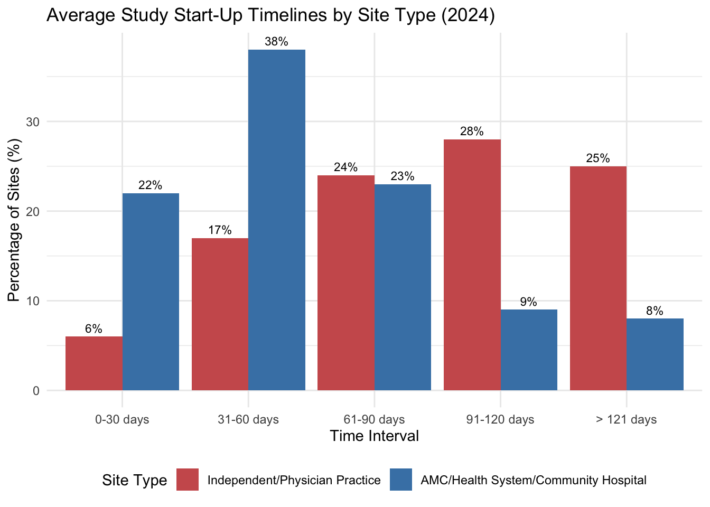

20 Logistics and Project Management
A large Phase III trial might involve 200 clinical sites across 25 countries, 3,000 patients, half a dozen specialized vendors, and a timeline of 4 years. Each patient visit generates data that must be captured, cleaned, and locked. Each site requires contracts, regulatory approvals, training, monitoring, and closeout. Each country has its own regulatory requirements, language considerations, and import procedures for investigational drugs. Temperature-sensitive biologics must be shipped in validated cold chains that maintain -70°C across continents. Randomization systems must be available 24/7 to assign treatments the moment a patient qualifies. And all of this must happen while maintaining the scientific integrity that makes the trial’s results meaningful.
This is the domain of clinical trial logistics: the practical coordination of people, documents, supplies, and processes that converts a protocol on paper into executed research. A brilliant study design means nothing if the drug never reaches the patient, if the data are lost in transmission, or if the site closes before enrollment completes. The difference between trials that succeed and trials that fail often lies not in the science but in the execution.
20.1 Organizational Framework and Roles
The execution of a clinical trial depends on a complex web of organizations and professionals, each operating within a strict framework of delegated authority and regulatory accountability.
The Key Players
Several distinct organizations participate in a clinical trial, each with defined responsibilities and regulatory obligations.
The sponsor initiates, manages, and finances the trial. Pharmaceutical companies, biotech firms, academic institutions, and government agencies all serve as sponsors. The sponsor owns the trial and bears ultimate responsibility for its conduct, including investigator selection, monitoring, and regulatory compliance (21 CFR 312.50).
The investigator, usually a physician designated as the Principal Investigator (PI), takes responsibility for the trial at a specific site. The PI supervises the research team, ensures patient safety, obtains informed consent, and guarantees that the protocol is followed faithfully. Though the PI may delegate tasks to coordinators and sub-investigators, regulatory accountability cannot be delegated: the PI who signs FDA Form 1572 is held responsible for all trial conduct at that site.
Contract Research Organizations (CROs) are specialized service providers that sponsors hire to conduct trial activities. CROs may provide anything from a single service (such as monitoring or data management) to full end-to-end trial management. The global CRO market exceeds $40 billion annually (Grand View Research 2024), reflecting how central these organizations have become to pharmaceutical development.
The study coordinator, also called the Clinical Research Coordinator (CRC), works at the site under the PI’s supervision. Coordinators are the workhorses of clinical research, managing patient visits, collecting data, maintaining regulatory documents, and serving as the primary point of contact between the site and the sponsor or CRO.
Vendors provide specialized services: central laboratories analyze specimens, electronic data capture companies provide software platforms, imaging core labs review scans, and interactive response technology vendors manage randomization and drug supply.
20.2 Biospecimen Logistics
In many modern trials, particularly in oncology and rare diseases, the collection, processing, and transport of biospecimens (blood, tissue, urine, or other biological materials) is a primary logistical thread. Unlike clinical data, which can be captured electronically, biospecimens are physical assets that require sophisticated chain-of-custody and stability controls.
The logistics of biospecimens involves several critical steps:
- Collection: Sites must follow strict protocol-defined procedures for collection, including timing relative to dosing and the use of specific collection tubes or kits.
- Processing: Many specimens require immediate processing at the site (e.g., centrifugation, aliquoting) before freezing.
- Storage: Sites must maintain calibrated -20°C or -80°C freezers with alarm systems to prevent sample loss due to temperature excursions.
- Transport: Specialized couriers move samples in dry ice or liquid nitrogen to central laboratories or biorepositories.
- Tracking: A “Biospecimen Log” or specialized software tracks each sample from the patient to the final analysis, ensuring that the link between the participant and their biological data is maintained while preserving confidentiality.
Failures in biospecimen logistics (such as a missed collection window or a temperature excursion during transit) can lead to the loss of critical exploratory or primary endpoint data, making biospecimen management a high-risk component of the trial’s operational design.
Delegation, Accountability, and Partner Selection
Modern trials operate through extensive delegation, but accountability follows specific rules. Sponsors may transfer specific obligations to CROs through written agreements (21 CFR 312.52). Once transferred, the CRO assumes regulatory responsibility for those tasks. Despite delegation, the sponsor retains ultimate accountability. The sponsor must oversee the CRO’s performance, review monitoring reports, and verify that delegated tasks are executed properly. As industry observers note, the sponsor remains captain of the ship even when the CRO handles navigation: the sponsor is still responsible for reaching the destination safely. PIs may delegate tasks to coordinators, sub-investigators, and nurses. A delegation log documents who performs which tasks, but the PI retains accountability for site conduct.
Since sponsors delegate so much work to CROs and vendors, selecting the right partner is a critical project management task. The process typically follows a structured path defined by internal SOPs.
Before contacting vendors, the sponsor must define exactly what is being outsourced, ranging from a specific functional service (such as data management alone) to a full-service model where the CRO handles everything from site selection to the final clinical study report. The sponsor then issues a Request for Proposal (RFP) outlining study specifications (protocol synopsis, number of patients, number of sites, timeline) and asking vendors to provide detailed budgets and proposals. The quality of vendor proposals depends on the clarity of the RFP; vague requirements lead to vague, incomparable bids.
Top candidates are invited to a bid defense meeting, which is not just a financial negotiation but a check on team chemistry. The sponsor meets the team who will run the project (not just salespeople), assessing their experience in the therapeutic area, their available staffing, and whether their systems (EDC, CTMS) are compatible with the sponsor’s infrastructure.
Once a vendor is selected, the scope of work is formalized in a contract. Managing this scope is a primary duty of the project manager. Work outside the original scope triggers a change order to adjust budget and timeline. Uncontrolled scope creep is a common cause of budget overruns.
20.3 Trial Governance and Documentation
Clinical trials are governed by a pyramid of documentation, ranging from the foundational scientific protocol to the daily records that document every patient interaction and drug shipment.
The Protocol as Governing Document
The protocol is the constitution of a clinical trial. It specifies everything: the scientific rationale, the objectives, the study design, the patient population, the treatments, the assessments, the endpoints, and the statistical analysis.
The sponsor develops the protocol, often with input from investigators and CROs. Once finalized, the protocol must be approved by regulatory authorities and ethics committees before any patient can be enrolled. Any subsequent changes require formal amendments, with new regulatory and ethics approvals required before implementation, except for changes necessary to eliminate immediate hazards to participants.
The PI and site agree to follow the protocol by signing it (or a separate agreement). ICH GCP section 4.5 explicitly states that the investigator shall conduct the trial in compliance with the agreed protocol. Deviations are documented and reported; systematic deviations trigger regulatory scrutiny.
The Flow of Documents
Clinical trials generate vast quantities of documents, organized into structured collections maintained by each party.
The Trial Master File (TMF) is the sponsor’s collection of essential documents. ICH GCP defines the TMF as the archive demonstrating that the trial was conducted according to GCP and regulatory requirements. The TMF includes:
- protocol and amendments
- regulatory approvals
- ethics committee correspondence
- investigator agreements
- monitoring reports
- safety data
The Investigator Site File (ISF) is the site’s equivalent: the collection of essential documents maintained at each clinical trial site. The ISF includes:
- the site’s copy of the protocol
- regulatory approvals
- IRB correspondence
- delegation logs
- training records
- source document worksheets
Document flow follows regulated pathways. The sponsor provides the Investigator’s Brochure containing preclinical and clinical information about the investigational product. The site returns signed agreements and regulatory forms. Informed consent forms, developed by the sponsor, are reviewed and approved by each site’s IRB before use. Safety reports flow from sites to sponsors and from sponsors to regulators and all participating sites.
The essential documents specified by ICH GCP fall into three categories:
- Before trial initiation: protocol, approvals, CVs
- During the trial: monitoring reports, updated consents, serious adverse event reports
- After trial completion: final reports, final reconciliations, archiving records
20.4 Scale, Timelines, and Global Execution
The transition from a regulatory and scientific framework (defined by protocols and essential documents) to the physical execution of a trial marks the most significant operational hurdle in clinical development. This stage requires scaling a rigorous set of rules across immense geographies and year-long durations, where the logistical footprint is shaped by the industry’s success rates and the demands of global patient access.
Development Timelines and Success Rates
The logistical challenge of clinical trials is compounded by their long durations and high attrition rates (Table 20.1). As discussed in Chapter 19, nearly half of all clinical research sites reported that operational challenges forced them to reduce the number of studies they participated in during the past year (WCG Clinical 2024). Total clinical trial starts declined from the 2021 peak, returning to 2019 levels by 2024. This contraction was largely driven by the fading of COVID-19-related research (which declined 62% in 2024) but also by a reduction in early-phase investment from both larger companies and Emerging Biopharma (EBP) firms (IQVIA Institute for Human Data Science 2025).
| Metric | Current Data (2023-2024) | Context |
|---|---|---|
| Total development time | 10-15 years | Discovery through FDA approval |
| Clinical phase duration | 9.1 years average | Phase I through NDA approval |
| Inter-trial intervals | 17 months (2024) | Gaps between research phases; recovered from pandemic peak of 32 months (IQVIA Institute for Human Data Science 2025) |
| Overall clinical success | 6-7% | Phase I to market launch (composite success rate) |
| Phase I success | 47% (2024) | Safety and dosing assessment |
| Phase II success | 25% (2024) | Proof-of-concept; lowest success rate |
| Phase III success | 59% (2024) | Confirmatory efficacy trials |
| NDA/BLA approval rate | 98% (2024) | Post-submission to approval |
| First-cycle approval | 74% (2024) | Approved without major deficiencies |
| Expedited programs | 79% (2024) | Using breakthrough, priority, or accelerated pathways |
The duration of individual clinical trials and overall development timelines have both continued to expand in recent years. Modern benchmarks from the Deloitte 2025 report show that total cycle time (from Phase I through to regulatory filing) has reached 100.4 months, or over 8.3 years, with all stages of development lengthening over the past five years (Deloitte Centre for Health Solutions 2025). Phase III timelines have expanded the most, increasing by 12.0% over the last five years, reflecting the rising complexity of late-stage global trials and stricter regulatory requirements.
Total development time also reflects inter-trial intervals: the inactive periods between phases where data are analyzed, funding is secured, and subsequent protocols are finalized. According to IQVIA, inter-trial intervals contributed 17 months to overall medicine development time in 2024, representing a recovery from the pandemic-driven peak of 32 months in 2022, making further interval reduction one of the most significant opportunities for accelerating patient access (IQVIA Institute for Human Data Science 2025).
The shift toward global trials introduces significant logistical layers. While regions like China, India, and Eastern Europe offer large patient pools, they require managing varying regulatory timelines, language barriers, and complex global supply chains. A global trial requires harmonizing SOPs across cultures and ensuring that a site initiation in Brazil is as rigorous as one in Boston.
Multi-Regional Trials and Regulatory Framework
Late-stage programs are increasingly executed as multi-regional clinical trials (MRCTs), conducted across multiple countries and regulatory jurisdictions. This geographic scope is driven by practical and regulatory considerations: access to larger patient populations, faster enrollment through diversification, and regulatory expectations that evidence should be relevant to the populations in which a drug will be used (Smith, DiMasi, and Getz 2024; International Council for Harmonisation 2017).
Two ICH guidelines frame the design and interpretation of multi-regional trials.
ICH E5 (Ethnic Factors) addresses when clinical data generated in one region can support approval in another. It distinguishes between intrinsic ethnic factors (genetics, body weight, organ function) and extrinsic factors (medical practice, diet, environment). When these factors are likely to affect drug response, regulators may require local data or bridging studies to extrapolate from foreign trials (International Council for Harmonisation 1998).
ICH E17 (Multi-Regional Clinical Trials) provides fuller guidance on designing a single trial to support approval across multiple regions simultaneously. In practice, it pushes teams to treat “global” as a prespecified design choice: the trial should be structured so that, if the pooled result is positive, regulators can assess whether the evidence is sufficiently consistent and interpretable across regions (even when individual regions are not powered for standalone hypothesis tests). It also emphasizes planning regional representation prospectively and prespecifying regional analyses and decision-relevant summaries rather than discovering “regional stories” after the fact (International Council for Harmonisation 2017).
Although ICH harmonization has aligned much of clinical trial regulation, important differences remain. In the European Union, for example, the Clinical Trials Regulation (CTR) and its CTIS portal standardize much of the submission and coordination process across member states, while still leaving meaningful national operational differences in how ethics and competent-authority review are executed (European Medicines Agency 2022).
Across regions, submission pathways, ethics committee structures, inspection practices, and expectations for local participation can differ in ways that directly affect startup timelines and monitoring models. The practical point for project management is that “one global trial” still behaves like a portfolio of region-specific startup and oversight workflows. MRCT planning therefore needs explicit governance for regional representation and prespecified regional analyses, with operational controls that absorb local requirements without fragmenting data standards or protocol interpretation (International Council for Harmonisation 2017).
Table 20.2 summarizes key differences across major regulatory regions.
| Aspect | FDA (US) | EMA (EU) | PMDA (Japan) | NMPA (China) |
|---|---|---|---|---|
| Application type | IND | CTA (national or centralized) | CTN | IND |
| GCP standard | ICH E6(R3) | ICH E6(R3) + local annexes | J-GCP (ICH E6 + local) | China GCP (ICH E6 + local) |
| Local data requirement | Flexible | Flexible | Bridging often required | Local patients required for registration |
| IRB/EC structure | Central IRB common | National EC per member state | Central + local | Local EC per site |
| Inspection authority | FDA | National competent authorities | PMDA | NMPA |
These differences have operational consequences. A multi-regional trial may require separate regulatory submissions in each country, with different timelines and documentation requirements. Ethics committee structures vary: the United States permits central IRBs that cover multiple sites, while many countries require local ethics approval at each institution.
### Operational Friction and the Activation Bottleneck
These administrative layers directly impact study start-up timelines, which remain a primary logistical bottleneck. As documented in Chapter 18, start-up timelines vary dramatically by site type: 77% of academic medical centers and health systems require more than 60 days, while 60% of independent sites can initiate in under 60 days, with “Budgets and Contracts” cited by 77% of U.S. sites as the dominant bottleneck (WCG Clinical 2024). Ex-U.S. sites more frequently cite ethical/regulatory review (58%) as the primary obstacle.
This friction is exacerbated by a chronic technology mismatch. The proliferation of sponsor-mandated portals and platforms has reached a critical level; many site coordinators are now required to navigate 20+ different technology systems daily to conduct research. This “portal proliferation” creates an immense cognitive and administrative load on site staff, often leading to data entry errors and protocol deviations that further extend timelines. Many sponsors also mandate their own proprietary software, which frequently conflicts with the site’s existing technology infrastructure, forcing sites into manual workarounds.
Sites are actively working to mitigate these challenges. Common responses include hiring additional staff, prioritizing training, and (for 27% of sites) participating in fewer studies as a deliberate strategy to maintain quality (see Chapter 19 for detailed breakdowns of site solutions and Figure 19.1). On the workforce front, staff turnover trends have shown modest improvement, with the proportion of sites reporting low turnover (less than 5% annually) increasing from 22% in 2023 to 35% in 2024 (see Figure 19.4 in Chapter 19) (WCG Clinical 2024).
Figure 20.1 visualizes these process delays across site types.
Operational Challenges and Execution Models
Beyond regulatory differences, multi-regional trials face practical coordination hurdles. Language and translation requirements extend far beyond linguistic accuracy; informed consent forms, patient materials, and training manuals must be culturally adapted and medically equivalent across all participating regions. Global teams spanning a dozen or more time zones must rely on structured asynchronous communication and carefully scheduled real-time calls for critical decisions. The physical movement of investigational products also introduces complexity, as each country maintains its own customs and import regulations. This is particularly challenging for temperature-sensitive biologics, which require validated cold-chain logistics and rigorous contingency planning for border delays. Sponsors must also navigate a fragmented set of data privacy laws, including GDPR and PIPL, which often require regional hosting or complex pseudonymization protocols. Finally, the financial logistics of managing payments across dozens of currencies and banking systems demand meticulous attention to fair market value assessments and anti-corruption compliance.
Sponsors adopt various organizational models to manage these multi-regional complexities. Some favor a centralized model, running the entire trial from a single global operations center to maximize consistency, though this can sometimes sacrifice local expertise and responsiveness. Others utilize a regional hub model, where authority is delegated to specialized leads in Europe, Asia-Pacific, or the Americas, balancing global protocols with regional nuance. Alternatively, sponsors may partner with local CROs who possess deep expertise in specific emerging markets, accelerating startup even if it increases the burden of vendor management.
The choice depends on the sponsor’s organizational structure, the complexity of the protocol, and the specific countries involved. What matters is clarity about decision rights: when a site in Japan raises a protocol interpretation question, who has authority to answer?
The logistical footprint of a trial is often characterized by its executional design characteristics, the countable elements that define the scope of the operation. Benchmarking data from the Tufts Center for the Study of Drug Development (Tufts CSDD) illustrates the scale of modern trials.
A typical Phase III trial now spans an average of 14 countries and involves 82 investigative sites (Getz, Smith, and Kravet 2023). This geographic dispersion introduces significant logistical friction: different regulatory timelines, language barriers, and the need for complex global supply chains for investigational products and laboratory specimens.
Oncology and rare disease trials present even more intense logistical challenges. Despite enrolling relatively few patients, these trials are often more geographically dispersed. A rare disease trial might enroll only 200 patients globally but still require 27 sites across 10 countries to find them. Oncology trials involve nearly double the number of countries as non-oncology trials (13 versus 8) and require significantly more patient visits (29 versus 16), each adding to the logistical burden on both sites and patients (Getz, Smith, and Kravet 2023).
The number of vendors involved has also grown, with an average of 4 to 6 specialized providers per trial (Getz, Smith, and Kravet 2023). Coordinating these vendors (central labs, imaging core labs, EDC providers, and logistics firms) requires disciplined management to ensure data flows correctly and samples are processed within required windows.
20.5 Project Management and Execution Flow
The project management of a clinical trial focuses on the transition from planning to execution, ensuring that sites are activated, staff are trained, and data flows reliably from the clinic to the sponsor.
Site Initiation and Monitoring
Before a site can enroll patients, it must be formally initiated. The Site Initiation Visit (SIV) marks this transition. Typically conducted by CRO personnel, the SIV ensures that all regulatory approvals are in place, the investigational product has arrived and is properly stored, site staff understand the protocol and procedures, and the site’s essential documents are in order. Benchmarks show that study initiation (from protocol approval to first patient first visit) now takes an average of 166 days for Phase III trials (Lamberti et al. 2024).
TipChecklist: Remote/Hybrid Site Initiation Visit (SIV)
The increasing use of decentralized elements and remote work has shifted many “initiation” activities from a single in-person meeting toward a hybrid model. FDA guidance emphasizes that decentralized elements must preserve participant safety and data integrity; operationally, this implies that initiation must explicitly cover remote access, training, and computerized-system controls rather than assuming that in-person presence resolves them (U.S. Food and Drug Administration 2024b, 2024a).
- Regulatory and essential documents readiness: confirm approvals are current; confirm controlled document versions are distributed; confirm delegation and training records are complete and attributable (International Council for Harmonisation 1996, 2025).
- Consent readiness: confirm the correct consent versions, procedures for re-consent, and (if applicable) eConsent workflows and documentation controls (U.S. Food and Drug Administration 2016, 2024a).
- Computerized systems readiness: confirm access provisioning, role-based permissions, and audit trail availability for EDC/ePRO/IRT and any remote source-review workflows (U.S. Food and Drug Administration 2023a, 2024a).
- Remote/hybrid visit workflows: define how remote visits will be conducted, documented, and supported (telehealth procedures, home health vendor roles, escalation paths) (U.S. Food and Drug Administration 2024b).
- Investigational product logistics: confirm chain-of-custody processes for site and (if applicable) direct-to-participant shipments; confirm temperature excursion procedures and reconciliation responsibilities (U.S. Food and Drug Administration 2024b).
- Data flow and reconciliation: confirm expected data sources (central labs, devices, ePRO), transfer cadence, and responsibility for reconciliation and query resolution (U.S. Food and Drug Administration 2023b).
Monitors (whether employed by the sponsor or CRO) visit sites periodically to verify compliance. They review source documents, check informed consent processes, reconcile investigational product, and identify any issues requiring correction. Monitoring reports document these visits and any corrective actions required.
Beyond routine monitoring, sponsors and CROs may conduct audits, which are formal examinations of trial processes and documents to verify compliance with protocols, SOPs, GCP, and regulations. Regulators may also conduct inspections, particularly of pivotal trials submitted to support marketing applications.
Site Team Roles and Relationships
At the site level, the investigator shoulders substantial regulatory obligations. Patient safety comes first: the investigator must ensure that qualified staff are available, that appropriate medical care is provided, and that participants are protected from unnecessary risks. The investigator is responsible for all trial-related medical decisions. Informed consent must be obtained before any trial procedures, following approved procedures and forms, with participants informed of any new information that might affect their willingness to continue. Protocol compliance means conducting the study exactly as specified, with every deviation documented. Regulatory maintenance requires keeping the ISF current, reporting to the IRB, and cooperating with monitors and auditors. Investigators must retain trial records for specified periods (often 15 years or longer) and be available for regulatory inspection even years after a trial concludes.
Study coordinators occupy a unique position: they are on the ground at the site, managing the daily logistics that determine whether a trial succeeds or fails. Coordinators screen potential participants against eligibility criteria, schedule and conduct study visits, administer questionnaires and assessments, collect and enter data, and manage investigational product accountability. They maintain the ISF, respond to monitor queries, and prepare for monitoring visits. They also manage relationships with patients (who need coordination for visits and follow-up), with investigators (who rely on coordinators to keep the trial running smoothly), and with sponsors and CROs (who depend on coordinators for data and compliance). The coordinator role is often underappreciated. Surveys consistently show that experienced coordinators are the strongest predictor of site performance (Tufts Center for the Study of Drug Development 2021). Sites with high coordinator turnover struggle with enrollment and data quality. The best sponsors and CROs invest in coordinator relationships, recognizing that these individuals make or break trial execution.
The three-way relationship among sponsors, CROs, and sites can be complicated. CROs are accountable to sponsors: their contracts and revenue depend on sponsor satisfaction. Sites depend on sponsors (often through CROs) for trial opportunities and funding. This creates potential tension: CROs may prioritize sponsor timelines over site needs; sites may feel caught between competing demands. Communication breakdowns are common. Industry surveys show that over half of sites are dissatisfied with communication, frequently having to repeat information to multiple contacts or receiving conflicting instructions (Tufts Center for the Study of Drug Development 2021). High staff turnover at CROs exacerbates the problem: sites must repeatedly educate new monitors about local circumstances. Best practices emphasize clear role definitions, consistent contacts, and responsive communication.
20.6 Modern Logistics and Innovation
The logistics of clinical research are being transformed by new technologies and methodologies that address the friction of global operations and the shift toward more patient-centric designs.
AI and Automation in Trial Logistics
Modern trials face friction that manual processes can no longer handle. Supply chain complexity involves managing temperature-controlled shipments to thousands of homes instead of a few dozen sites. Protocol deviations increase as protocols become more complex and site staff (overburdened with multiple systems) make more errors. Global operations require harmonizing SOPs across 20+ countries with distinct regulatory requirements.
As explored in Chapter 25 and Chapter 26, the industry is increasingly turning to IT and AI solutions to address these structural problems.
AI’s practical impact on logistics is less about “autonomy” and more about coordination at scale: converting streams of operational events (shipments, visits, queries, deviations) into timely decisions and documented actions. The ethical and regulatory constraints remain unchanged (patient safety, data integrity, and accountability), so successful automation must produce auditable traces and preserve human oversight (U.S. Food and Drug Administration 2023a; National Institute of Standards and Technology 2023).
Decentralized elements and direct-to-patient (DtP) distribution increase the number of logistical endpoints by orders of magnitude, and many shipments require strict temperature control (IQVIA 2024). In this setting, the practical contribution of AI is to support forecasting, exception triage, and reconciliation at scale: predicting resupply needs from enrollment trajectories, visit schedules, and dispensing patterns; prioritizing shipments that show early warning signals (temperature excursions, customs delays, address failures); and linking sensor data, courier scans, and dispensing logs into a single, reviewable chain-of-custody record suitable for quality oversight and inspection.
Many of the longest delays that sponsors experience as “logistics problems” are, in fact, document and workflow problems. Feasibility questionnaires, contracts, training records, IRB/EC packets, and essential document completeness determine whether sites can activate on time and whether trial conduct remains inspection-ready. Workflow automation and AI-assisted classification can reduce filing and quality-control backlogs, but only when the system retains provenance and supports review rather than silently “auto-filing” errors into an eTMF structure (TMF Reference Model Initiative 2024; Amershi et al. 2019). In other words, speed is only useful when it preserves traceability.
The same logic extends to protocol deviations and risk-based quality management (RBQM). Deviations and noncompliance are often downstream of cognitive overload: complex schedules, many systems, and inconsistent site communication. RBQM formalizes the idea that oversight should follow risk signals rather than fixed calendars (Association of Clinical Research Organizations 2025). AI is most defensible here when it helps detect anomalous patterns (such as repeated out-of-window visits at a site), prioritizes monitoring attention and corrective actions, and produces structured explanations of why a record or site was flagged, explanations that can be reviewed, challenged, and revised as part of an auditable process.
Automation can fail ethically and operationally if it simply shifts work onto sites (more alerts, more portals, more passwords) without reducing burden. The technology burden on clinical research sites has reached critical levels; according to industry surveys, 60% of sites are now required to use more than 20 different technology systems daily to conduct clinical research (WCG Clinical 2024).
This proliferation of portals and platforms creates a significant “mismatch” between sponsor expectations and site operational needs. While 43% of sponsors view their own software’s adoption as a key site selection criterion, approximately 38% of sites find these sponsor-provided technologies to be inadequate for their workflows (WCG Clinical 2024). Consequently, 42% of sites now stress the need for sponsor acceptance of the site’s own technology infrastructure as a condition for study participation. Coordinators already sit at the center of execution, and systems that increase friction can worsen data quality and retention even when they appear technologically advanced (Tufts Center for the Study of Drug Development 2021). A useful design heuristic is to treat coordinator time as a constrained resource: automation should remove repetitive work and reduce context switching, while providing clear escalation paths for exceptions, rather than creating new administrative load. This human-factors framing is also a governance framing: when automation is used, the system should make it easy to see what happened, why it happened, and who is accountable for the next decision.
Direct-to-Patient and Decentralized Trials
The most significant logistical evolution of the 2020s is the rise of decentralized clinical trials (DCTs) and the direct-to-patient (DtP) supply chain. Driven by patient demand for convenience and enabled by regulatory guidance (U.S. Food and Drug Administration 2024b), logistics providers now routinely ship investigational products directly to participants’ homes.
This logistics model involves several components. Approximately 70% of direct-to-patient shipments require strictly controlled temperatures, necessitating smart packaging with IoT sensors that track stability in real-time (IQVIA 2024). Home health nursing services coordinate nurses to administer infusions or draw blood in the patient’s home, expanding the trial’s reach to those unable to travel to sites. Centralized ePharmacies now dispense trial medications, bypassing the traditional site-based pharmacy for simpler protocols.
This shift reduces the burden on patients but increases the complexity for the sponsor, who must manage a distributed supply chain with thousands of endpoints rather than a few dozen clinical sites.
AI can make these decentralized logistics more feasible by reducing the coordination overhead that would otherwise overwhelm sites and sponsors: supporting participant communications (reminders, instructions, scheduling), standardizing remote data capture, and routing exceptions (missed visits, sensor failures, shipping issues) to humans with clear context. A concrete industry example is Medable’s positioning of a unified DCT platform that bundles eConsent, eCOA/ePRO, remote monitoring, and study build workflows (Medable 2026). The operational takeaway is the pattern rather than the vendor: decentralized trials become practical when tooling collapses many distributed coordination tasks into auditable workflows that can be monitored and corrected in near real time, consistent with regulatory expectations for decentralized elements (U.S. Food and Drug Administration 2024b).
Early reports suggest that DCT elements may shorten enrollment durations, which currently average over 500 days for Phase III trials. However, the introduction of non-standard datasets and novel practices may, in the short term, contribute to higher levels of protocol complexity and the need for more specialized logistical management.
Project Management Fundamentals
Clinical trial project management adapts general project management principles to the unique demands of pharmaceutical research.
A project is a temporary endeavor with a defined beginning, end, and scope. In clinical trials, the project typically spans from protocol finalization through database lock and study reporting, or even through regulatory submission.
The project manager (or clinical project manager, clinical operations lead) coordinates activities across functions, monitors progress against timelines and budgets, identifies risks, and drives issues to resolution.
Scope defines what the trial will accomplish. The protocol establishes scientific scope; the project plan translates this into operational scope, specifying what must be done to execute the protocol.
Schedule specifies when activities must occur. Key milestones include first site initiated, first patient enrolled, last patient enrolled, last patient last visit, database lock, and final study report.
Budget establishes financial boundaries. Clinical trial budgets typically run to detailed line items: site costs, CRO fees, laboratory expenses, vendor costs, internal labor.
Quality means meeting specifications: conducting the trial according to the protocol, GCP, and regulatory requirements while generating clean, analyzable data.
Table 20.3 provides typical timelines and budgets by development phase.
| Phase | Duration | Patients | Trial Cost | Key Milestones | Common Challenges |
|---|---|---|---|---|---|
| Phase I | 6-12 months | 20-100 | $1-5M | FIH, MTD, PK | Dose selection; Safety stops |
| Phase II | 1-2 years | 100-500 | $10-30M | PoC, Dose-response | Go/no-go decision; Endpoint selection |
| Phase III | 2-4 years | 300-3000+ | $50-200M+ | LPLV, DB Lock, CSR | Enrollment delays; Data quality |
| NDA/BLA | 10-12 months | N/A | $5-10M | Submission, Review, Approval | Complete response; Advisory committee |
| Phase IV | Ongoing | Varies | Varies | REMS, PMRs | Safety signal management |
[!NOTE] FIH = First-in-Human; MTD = Maximum Tolerated Dose; PoC = Proof of Concept; LPLV = Last Patient Last Visit; PMRs = Post-Marketing Requirements
Effective project management begins with thorough planning before the first patient enrolls.
The study plan or clinical operations plan documents how the trial will be executed. It covers site selection criteria, recruitment strategy, monitoring approach, data management processes, safety reporting procedures, and vendor management.
Timeline development works backward from the required endpoints. If the sponsor needs a completed CSR by a certain date, what must happen when? When must database lock occur? When must the last patient complete the last visit? This backward planning reveals the critical path.
The following table (Table 20.4) outlines the key activities and their logical dependencies in a clinical trial.
| Activity | Key Steps | Dependencies |
|---|---|---|
| Protocol Development | Draft protocol, Investigator Review, Final Approval | Precedes all site activities |
| Regulatory | IND/CTA Submission, Ethics Approval, Green Light | Precedes IP shipment |
| Site Activation | Feasibility, Contract Negotiation, SIV, Green Light | Precedes Enrollment |
| Enrollment | Screen patients, Enroll, Randomize, Treat | Dependent on Site Activation |
| Data Management | Database Build, UAT, Data Entry, Cleaning, Lock | Runs parallel to Enrollment |
| Reporting | Analysis, TLF Generation, CSR Writing | Dependent on Database Lock |
Resource planning identifies what people, equipment, and services are needed when. How many monitors will be required at peak enrollment? What laboratory capacity is needed?
Risk assessment anticipates what might go wrong. Common clinical trial risks include slow enrollment, poor data quality, site non-compliance, vendor underperformance, and regulatory delays.
Once the trial is underway, project management shifts to monitoring, controlling, and problem-solving.
Status tracking monitors key metrics: sites activated, patients enrolled, data cleaned, queries resolved, protocol deviations, serious adverse events. Dashboards and reports provide visibility into trial health.
Variance analysis compares actual performance against plan. If enrollment is running 30% behind projection, what is causing the gap?
Issue management addresses problems that arise. Issues are logged, assigned to owners, tracked to resolution.
Change control manages modifications to scope, schedule, or budget. Protocol amendments, site additions, vendor changes, and budget increases all require formal approval and documentation. Protocol amendments are a major logistical disruptor; the average Phase III protocol is amended 2-3 times (Getz et al. 2016). Operationalizing an amendment requires regulatory resubmission to every IRB/EC and regulatory authority, re-consenting patients if risks or procedures change, updating EDC databases and IVRS/IRT randomization logic, and revising supply chain forecasts. A single substantial amendment can cost $500,000 or more in direct and indirect fees (Getz et al. 2016).
Communication keeps stakeholders informed. Regular team meetings, status reports, and steering committee updates ensure that sponsors, CROs, and key sites understand trial status.
Clinical trials require coordination across many specialized functions: * Clinical operations manages sites and monitors. * Data management handles data collection and cleaning. * Biostatistics performs analyses. * Regulatory affairs manages submissions. * Pharmacovigilance monitors safety. * Medical monitoring provides oversight. * CMC/supply chain ensures product availability.
Each function has its own deliverables and interdependencies. The project manager must understand these interdependencies and coordinate handoffs.
Modern clinical trial project management relies heavily on integrated technology systems. Clinical Trial Management Systems (CTMS) tracking site and patient status. Electronic Data Capture (EDC) platforms enable remote data review. Collaboration platforms facilitate communication across distributed teams. Analytics dashboards transform raw data into actionable insights for risk-based monitoring.
Despite careful planning, clinical trials frequently encounter problems. Enrollment shortfalls are the most common issue. Options include adding sites, extending timelines, or intensifying recruitment. Data quality issues may require site retraining. Safety signals may require protocol amendments. Budget overruns force difficult decisions about scope or resources.
Experienced project managers expect problems and build margin into their plans, maintaining contingency reserves and cultivating relationships that enable quick problem-solving.
20.7 Publication and Data Sharing Policies
How and when trial results become public is now as much a matter of policy as of science. This section covers publication practice, reshaped by the 2022 update to Good Publication Practice, together with the data-sharing and transparency commitments that increasingly accompany it.
Publication policy: GPP 2022 and modern transparency expectations
Classic operational handbooks addressed publication policy in terms of authorship criteria and sponsor review rights (Meinert 2013). The 2022 update to Good Publication Practice (GPP 2022) extends these expectations to include plain-language summaries, patient authorship, and transparency about sponsor involvement (DeTora et al. 2022).
GPP 2022 recommends that every peer-reviewed publication be accompanied by a plain-language summary accessible to patients and the public. It explicitly addresses the role of patients as potential authors or contributors, recognizing that patient expertise may be relevant to interpreting outcomes, burden, or real-world applicability. The guidelines also emphasize transparency about medical writing support and statistical analysis, requiring disclosure of any sponsor involvement in study design, data access, and manuscript preparation.
From an operational standpoint, publication planning should begin early in the trial, ideally during protocol development, to ensure that data collection supports planned analyses and that authorship expectations are clear before results emerge.
NoteTemplate: Publication Policy (GPP 2022-Aligned)
- Authorship criteria: ICMJE criteria for authorship; explicit documentation of contributions; prohibition of ghost authorship.
- Plain-language summaries: commitment to producing accessible summaries for each primary publication; process for patient review of draft summaries.
- Patient contributors: defined process for including patient authors or acknowledged contributors where their input meaningfully shaped interpretation or presentation.
- Sponsor review rights: timeline for sponsor review (typically 30-60 days); explicit prohibition of sponsor suppression of unfavorable results; documentation of any sponsor-requested changes and author responses.
- Data access and transparency: statement of investigator access to study data; commitment to registration and results reporting per FDAAA and NIH policies.
- Publication timing: planned timeline for primary results publication relative to database lock; coordination with regulatory submissions.
Ancillary study policy: alignment with NIH Data Management and Sharing requirements
Traditional ancillary study policies addressed resource neutrality, Steering Committee review, and restrictions on treatment-group analyses until main trial completion (Meinert 2013). For NIH-funded research, the 2023 Data Management and Sharing (DMS) Policy adds a new dimension: ancillary studies must inherit or establish their own data sharing plans, and the relationship between parent and ancillary data must be documented (National Institutes of Health 2023).
The practical implication is that ancillary study proposals should address not only scientific merit and resource impact, but also how data generated will be managed, retained, and shared. For specimens or data collected under the parent trial’s consent, investigators must verify that consent language supports the proposed ancillary use, which argues for broad consent language in the original protocol.
NoteTemplate: Ancillary Study Policy (NIH DMS-Aligned)
- Proposal requirements: scientific rationale; resource impact assessment; timeline relative to parent trial milestones; investigator qualifications.
- Review and approval: Steering Committee or designated subcommittee review; sponsor concurrence for industry-funded trials; documentation of approval.
- Data management plan: ancillary study-specific DMS plan or explicit adoption of parent trial plan; identification of repositories for data and specimens.
- Consent alignment: verification that parent trial consent supports proposed ancillary use; process for obtaining additional consent if required.
- Embargo and coordination: restrictions on ancillary publications that could compromise parent trial integrity or unblinding; timeline for lifting embargoes relative to primary results.
- Data sharing timeline: commitment to share ancillary study data per NIH DMS timelines (generally at time of publication or end of award, whichever comes first).